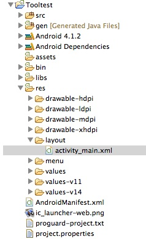
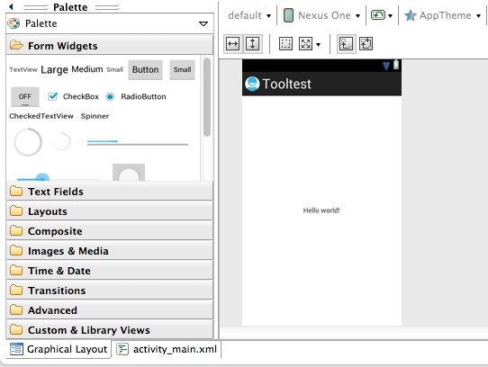
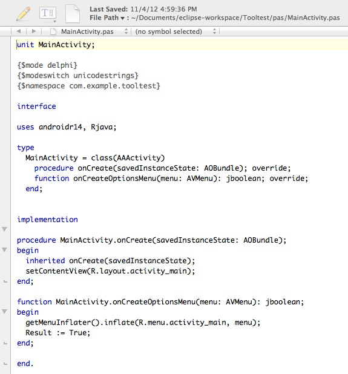

Complete build instructions are at wiki.freepascal.org/FPC_JVM/Building, but here's the short version. Note that this assumes you already have a non-JVM FPC compiler installed (for example, stable version 2.6.0).
svn co http://svn.freepascal.org/svn/fpc/trunk .
make clean allThen move the resulting fpcmake executable to anywhere outside the checkout directory.
make_path=/Users/Phil/Tools/fpctests/fpcmake install_path=/Users/Phil/Tools/fpcjvm make FPCMAKE=$make_path CROSSOPT="-O2 -g" CPU_TARGET=jvm OS_TARGET=android INSTALL_PREFIX=$install_path all crossinstallWhen the make is done, you'll have the FPC JVM compiler (ppcjvm), the compiled System unit, and the compiled androidr14 unit that provides access to the entire Android RTL.
fpc pba
Both the Android tools and Eclipse assume that you have Java installed on your development computer. If not, download the JDK from www.oracle.com/technetwork/java/index.html. Note that I did not need to install any additional Java software on my Mac; you may not need to download the JDK either.
Once installed you also have to download some additional pieces. I only downloaded the basics using the SDK's Android SDK Manager:
Tip: While you're at it in the Android SDK Manager, create at least one virtual device (Tools | Manage AVDs) if you want to test your apps in the Android emulator (but be warned, the emulator is dreadfully slow).
Once you have Eclipse installed, follow the instructions and install the ADT Plugin (developer.android.com/tools/sdk/eclipse-adt.html).
/Users/phil/Tools/jvmtests/pba
~/Tools/fpcjvm/lib/fpc/2.7.1/ppcjvm ${project_loc} -FD/usr/local/bin
Tip: You can include additional FPC switches if necessary
(for example, additional -Fu switches).
Click Next.
Figure 1. Folders and files in a typical Eclipse Android project.

src - this is where the project's Java source files would go, but since we're developing with Pascal you won't use this folder.
gen - each time you build the project, Eclipse extracts resource identifiers from all of the project's XML resource files and creates a new R.java file; PBA converts R.java to Rjava.pas each time it's updated.
assets - database files, images, etc. can be placed here for deployment with your app.
bin - compiled files (.class extension) are placed here under classes; the .apk file that you deploy is created here too.
libs - place any .jar files that your app needs here; you can create a .jar file from compiled Pascal .class files as well as from compiled Java .class files.
res - XML resource files go here; note how Eclipse has opened the activity_main.xml resource file in the Graphical Layout designer; you can also switch to a raw XML editor to view and edit a layout (see Figure 2).
AndroidManifest.xml - project's manifest file; normally you let Eclipse
manage this file.
Figure 2. Eclipse layout designer.

Tip: If you get an error message, it may mean that you don't have PBA configured properly as an external tool. If you edit Pascal Builder's configuration, you'll need to delete the project's Pascal Builder and import it again to use the updated configuration.
To see your project's Pascal files (created by PBA), select your project in Package Explorer and choose File | Refresh. You should now see a pas folder in Package Explorer. Expand it and select MainActivity.pas. Right-click it and choose Open With | Text Editor to open it in Eclipse. You can also open Rjava.pas to see your project's resource identifiers. Note how MainActivity.pas references two resource identifiers.
Tip: If you double-click a Pascal file, it will open with whatever program you have associated with the .pas extension. On my Mac, this is TextWrangler. If you prefer, you can then edit your source with a more familiar editor instead of in Eclipse's editor (see Figure 3).
Figure 3. Pascal boilerplate code for Android "activity" (as viewed in TextWrangler).

Right-click your project in Package Explorer and choose Run As | Android Application. Eclipse will launch the Android emulator and, after a lengthy delay, your app will start, displaying "Hello world!". Press the Esc key to exit the app in the emulator.
ADSSQLiteDatabase = class external 'android.database.sqlite' name 'SQLiteDatabase' (ADSSQLiteClosable)
var FileName : string; Db : ADSSQLiteDatabase; begin FileName := '/data/data/com.mycompany.myapp/databases/mydb.sqlitedb'; Db := ADSSQLiteDatabase.openDatabase(FileName, nil, ADSSQLiteDatabase.OPEN_READONLY);In this case, openDatabase is a class function that returns an instance of the SQLiteDatabase class if the specified database is opened successfully.
developer.android.com/reference/android/database/sqlite/SQLiteDatabase.html
and_path=~/Tools/android-sdk-macosx/platforms/android-16/android.jar cord_path=~/Tools/phonegap-current/lib/android/cordova-2.1.0.jar java -jar /usr/local/bin/javapp.jar -bootclasspath $and_path -classpath $cord_path -protected -o cordova_api org.apache.cordova.api.This creates files cordova_api.pas and cordova_api.inc containing Pascal declarations for the PhoneGap plugin classes.
comp_path=~/Tools/fpcjvm/lib/fpc/2.7.1 rtl_path1=$comp_path/units/jvm-android/rtl rtl_path2=$comp_path/units/jvm-android/rtl/org/freepascal/rtl $comp_path/ppcjvm -Tandroid -XP -Fu$rtl_path1 -Fu$rtl_path2 -O2 -g someunit.pasThe second RTL path is not strictly needed to compile, but you'll get a warning if you don't include it.
jar -cvf myunits.jar myunitsAll of the .class files under the myunits directory would get added to myunits.jar.
macpgmr (at) icloud (dot) com
First posted Nov. 4, 2012.